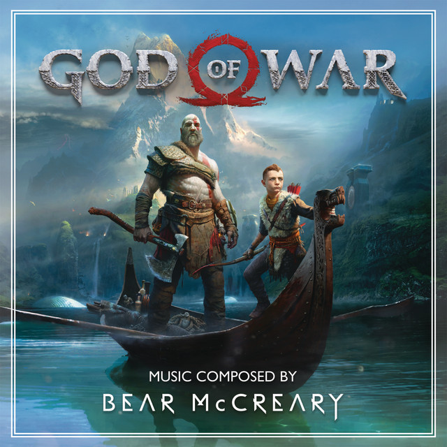
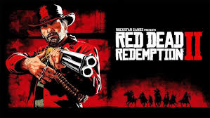
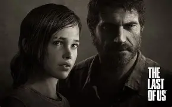
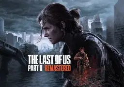

Reseñas de Videojuegos
Revisa nuestras recomendaciones gamers:
The Legend of Zelda: Breath of the Wild

Una aventura de mundo abierto con libertad total para explorar. Revolucionó la franquicia de Zelda con su diseño no lineal. Disponible en Nintendo Switch.
God of War
Kratos regresa en una épica mitológica ambientada en tierras nórdicas. Un juego con narrativa madura, combates intensos y gráficos espectaculares. Disponible en PS4 y PC.
Red Dead Redemption 2
Una obra maestra del western interactivo creada por Rockstar Games. Juegas como Arthur Morgan en un mundo abierto realista y emotivo, lleno de decisiones morales y libertad.
The Last of Us – Parte I
The Last of Us es una obra maestra del género de acción-aventura. Ambientado en un mundo postapocalíptico tras la propagación de un hongo mortal, el juego sigue a Joel, un hombre endurecido por la pérdida, y Ellie, una adolescente inmune a la infección. Juntos, atraviesan un Estados Unidos devastado enfrentando enemigos humanos e infectados.
he Last of Us – Parte II
The Last of Us Part II continúa la historia varios años después del primer juego. Ahora Ellie es la protagonista principal, embarcándose en una misión de venganza que la lleva a enfrentarse con dilemas morales, traiciones y pérdidas dolorosas.